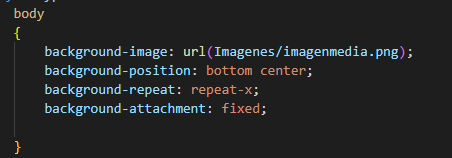

Regresar
Escriba una regla de CSS que coloque una imagen de fondo en la mitad inferior de la página, en mosaiko horizontal. La imagen deberá permanecer en un lugar cuando el usuario se desplace hacia arriba o abajo.
El codigo ocupado fue el siguiente:

 Regresar
Regresar